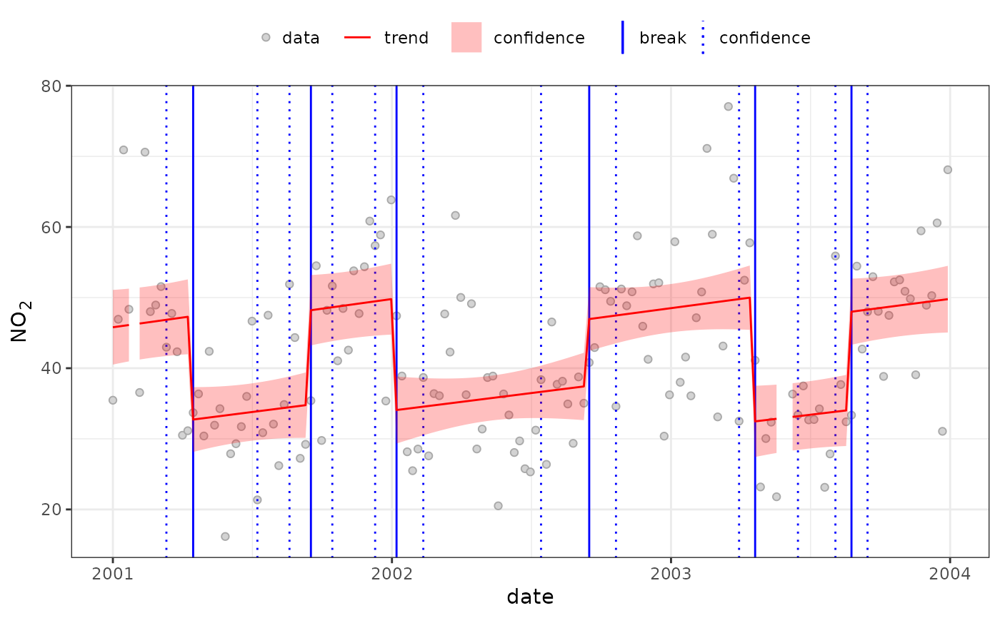
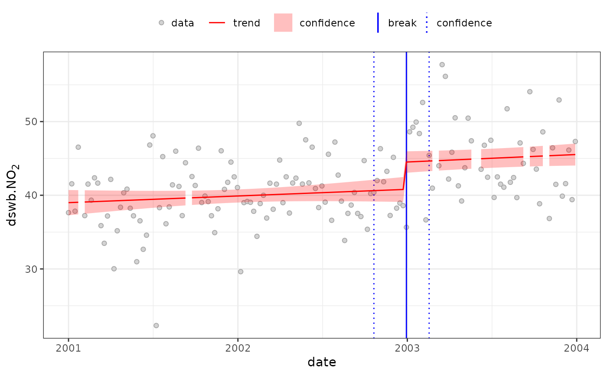

isolateContribution
isolate.signal.RdEnvironmental time-series signal processing: Contribution isolation based on background subtraction, deseasonalisation and/or deweathering.
Usage
isolateContribution(
data,
pollutant,
background = NULL,
deseason = TRUE,
deweather = TRUE,
method = 2,
add.term = NULL,
formula = NULL,
output = "mean",
...
)Arguments
- data
Data source, typically
data.frame(or similar), containing all time-series to be used when applying signal processing.- pollutant
The column name of the
datatime-series to be signal processed.- background
(optional) if supplied, the background time-series to use as a background correction. See below.
- deseason
logical or character vector, if
TRUE(default), thepollutantis deseasonalised usingday.hourandyear.dayfrequency terms, all calculate from thedatatime stamp, assumed to bedateindata. Other options:FALSEto turn off deseasonalisation; or a character vector of frequency terms if user-defining. See below.- deweather
logical or character vector, if
TRUE(default), the data is deweathered using wind speed and direction, assumed to bewsandwdindata). Other options:FALSEto turn off deweathering; or a character vector ofdatacolumn names if user-defining. See below.- method
numeric, contribution isolation method (default 2). See Note.
- add.term
extra terms to add to the contribution isolation model; ignore for now (in development).
- formula
(optional) Signal isolate model formula; this allows user to set the signal isolation model formula directly, but means other formula terms (
background,deseasonanddeweather) will be ignored.- output
output options; ignore for now (in development)
- ...
other arguments; ignore for now (in development)
Value
isolateContribution returns a vector of
predictions of the pollutant time-series after
the requested signal isolation.
Details
isolateContribution estimates and
subtracts pollutant variance associated with
factors that may hinder break-point/segment analysis:
Background Correction If applied, this fits the supplied
backgroundtime-series as a spline term:s(background).Seasonality If applied, this fits regular frequency terms, e.g.
day.hour,year.day, as spline terms, default TRUE is equivalent tos(day.hour)ands(year.day). All terms are calculated fromdatecolumn indata.Weather If applied, this fits time-series of identified meteorological measurements, e.g. wind speed and direction (
wsandwdindata). If bothwsandwdare present these are fitted as a tensor termte(ws, wd). Otherdeweathering terms, if included, are fitted as spline terms(term). The defaultTRUEis equivalent tote(ws, wd).
Using the supplied arguments, it builds a signal
(mgcv) GAM model, calculates,
and returns the mean-centred residuals as an
estimate of the isolated local contribution.
Note
method was included as part of method
development and testing work, and retained for now.
Please ignore for now.
References
Regarding mgcv GAM fitting methods, see
Wood (2017) for general introduction and package
documentation regarding coding (mgcv):
Wood, S.N. (2017) Generalized Additive Models: an introduction with R (2nd edition), CRC, DOI: https://doi.org/10.1201/9781420010404.
Regarding isolateContribution, see:
Ropkins et al (In Prep).
See also
Regarding seasonal terms and frequency
analysis, see stl and
spectralFrequency
mgcv, gam.
Examples
#fitting a simple deseasonalisation, deweathering
#and background correction (dswb) model to no2:
aq.data$dswb.no2 <- isolateContribution(aq.data,
"no2", background="bg.no2")
#> no2 ~ +s(bg.no2) + te(wd, ws) + s(year.day) + s(day.hour)
#compare at 7 day resolution:
temp <- openair::timeAverage(aq.data, "7 day")
#without dswb
quantBreakPoints(temp, "no2", test=FALSE, h=0.1)
#> Using all 6 suggested breaks
#>
#> 2001-04-16 (2001-03-12 to 2001-07-09)
#> 47.28->32.73;-14.55 (-31%)
#>
#> 2001-09-17 (2001-08-20 to 2001-10-15)
#> 34.76->48.21;13.45 (39%)
#>
#> 2002-01-07 (2001-12-10 to 2002-02-11)
#> 49.79->34.08;-15.71 (-32%)
#>
#> 2002-09-16 (2002-07-15 to 2002-10-21)
#> 37.42->46.96;9.545 (26%)
#>
#> 2003-04-21 (2003-03-31 to 2003-06-16)
#> 49.99->32.47;-17.52 (-35%)
#>
#> 2003-08-25 (2003-08-04 to 2003-09-15)
#> 34.02->48;13.98 (41%)

#with dswb
quantBreakPoints(temp, "dswb.no2", test=FALSE, h=0.1)
#> Using all 1 suggested breaks
#>
#> 2002-12-30 (2002-10-21 to 2003-02-17)
#> 40.78->44.51;3.727 (9.1%)
